Lab 7 - Principios de Codificação da Voz
Primeira parte: Áudios originais
Texto do áudio:
Entre por esta porta agora, e diga que me adora, você tem meia hora pra mudar a minha vida, vem, vambora, que o que você demora é o que o tempo leva
Audio original
Audio Matheus
Audio Sheila
Segunda parte: Plots dos áudios - completo
Audio original
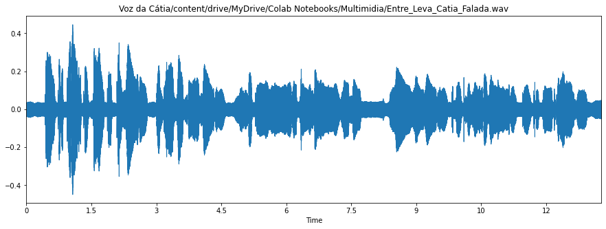
Audio Matheus
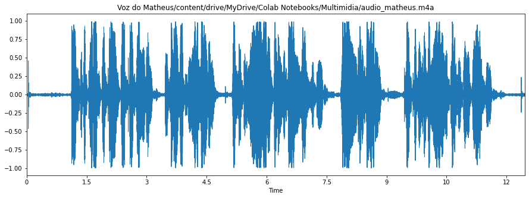
Audio Sheila
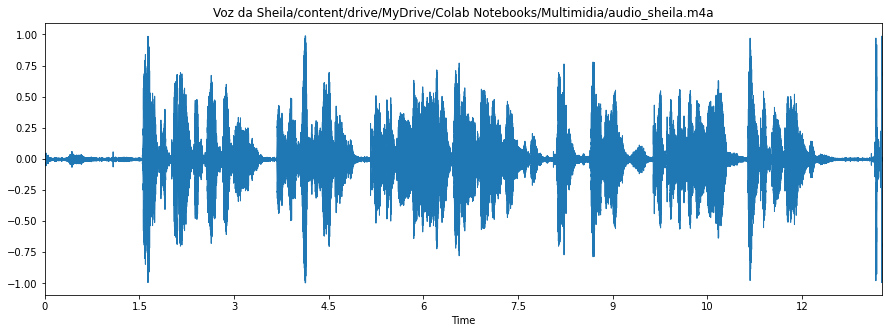
Terceira parte: Plots dos áudios - primeira estrofe
Audio original
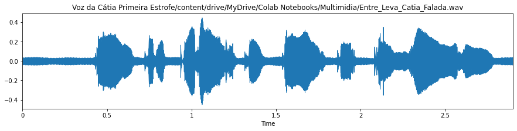
Audio Matheus
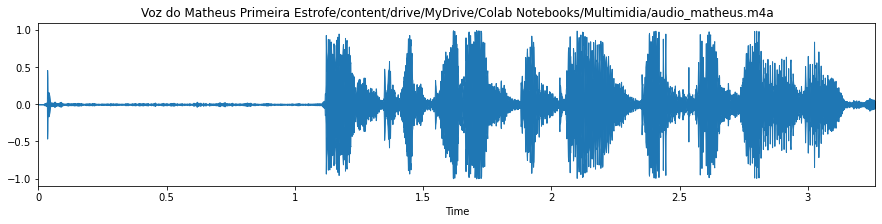
Audio Sheila
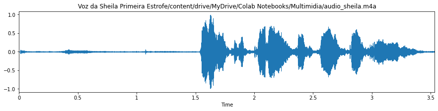
Quarta parte: Cálculo dos Parâmetros LPC, separação U/UV e Espectro + Envoltória LPC
Audio original
Limiar VAD 7.53
Limiar U/UV 10.23
Sonoros = 28 e Surdos = 8
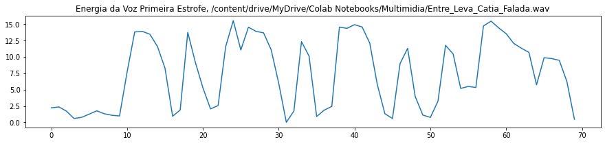
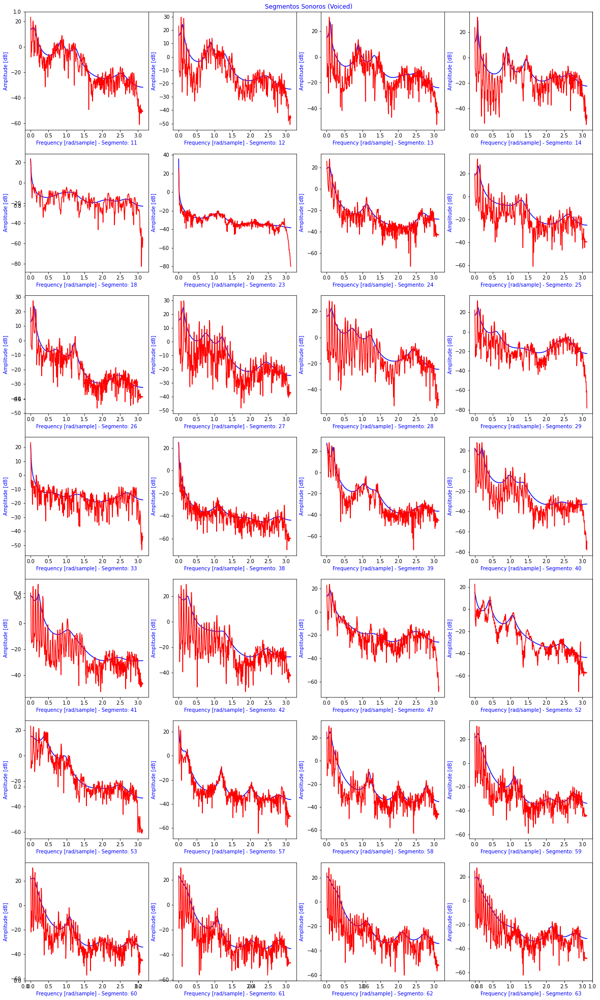
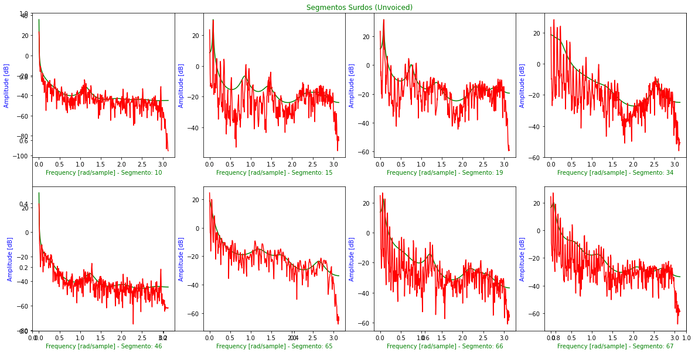
Audio Matheus
Limiar VAD 35.07
Limiar U/UV 37.77
Sonoros = 17 e Surdos = 9
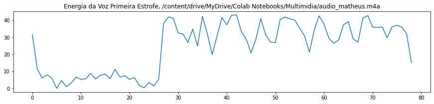
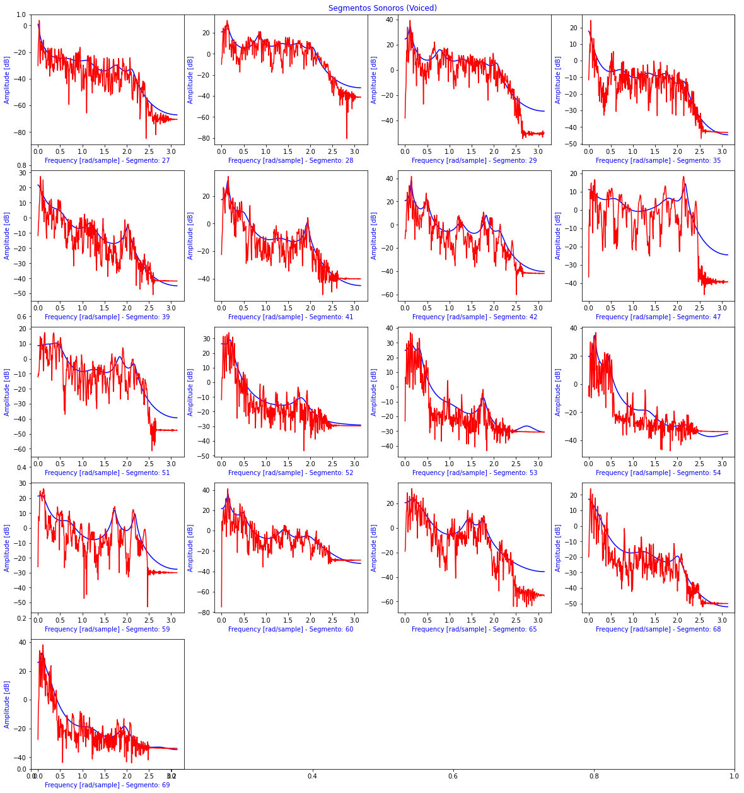
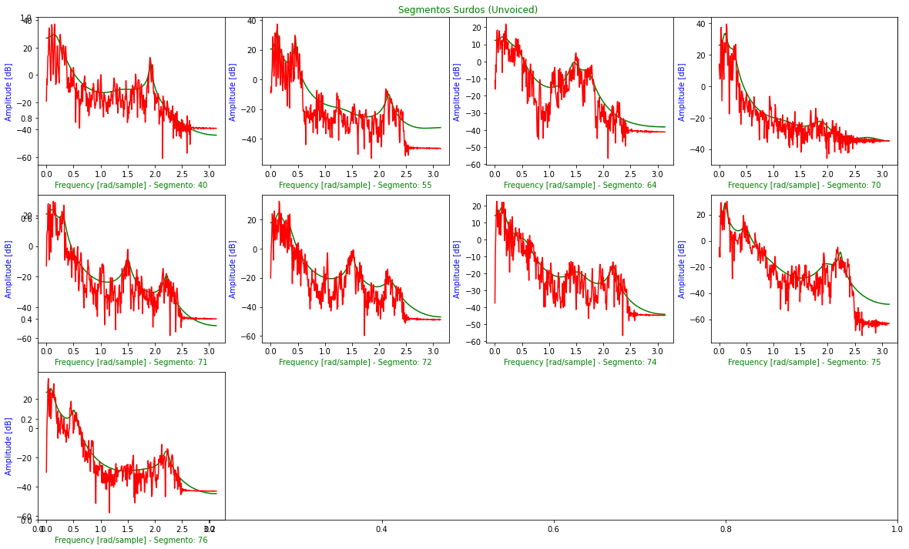
Audio Sheila
Limiar VAD 34.36
Limiar U/UV 37.06
Sonoros = 9 e Surdos = 7
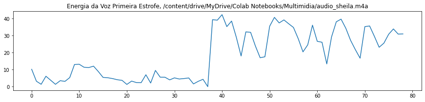
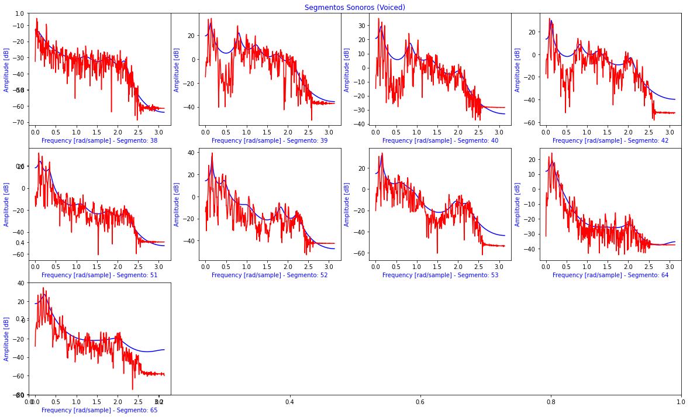
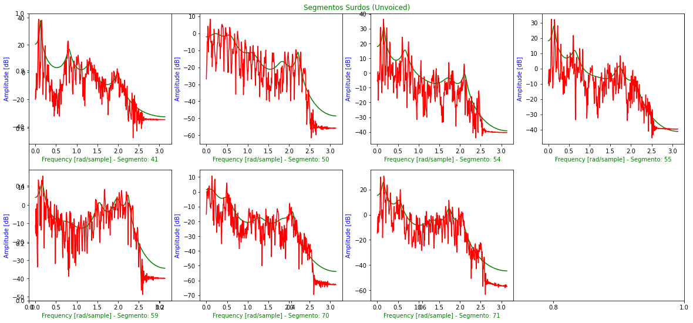
Quinta parte: f0 e pitch
Audio original
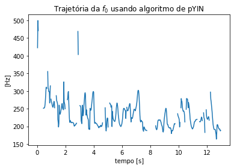
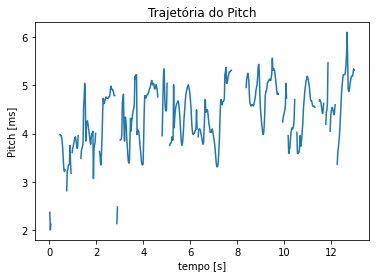
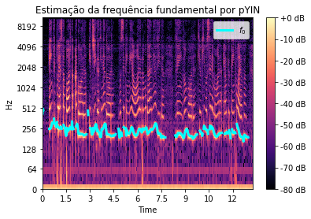
Audio Matheus
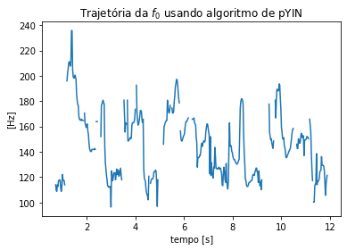
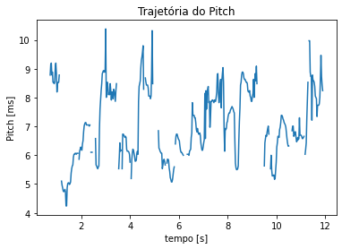
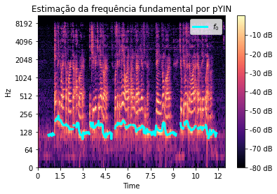
Audio Sheila
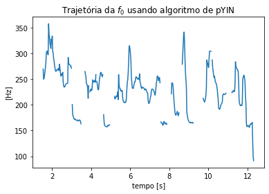
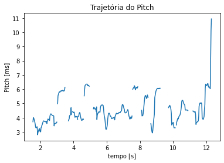
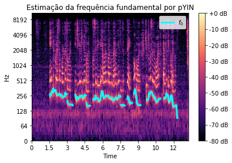